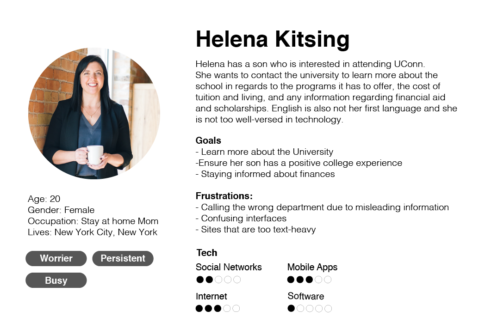
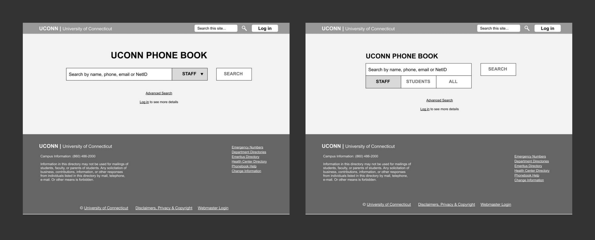
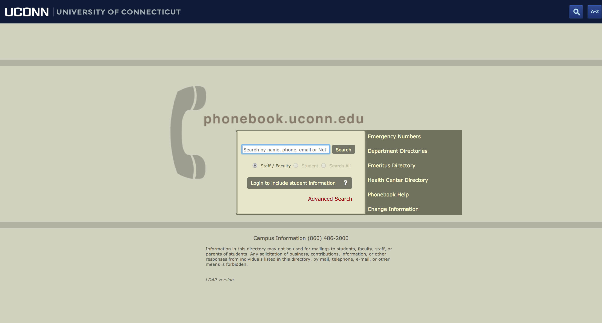
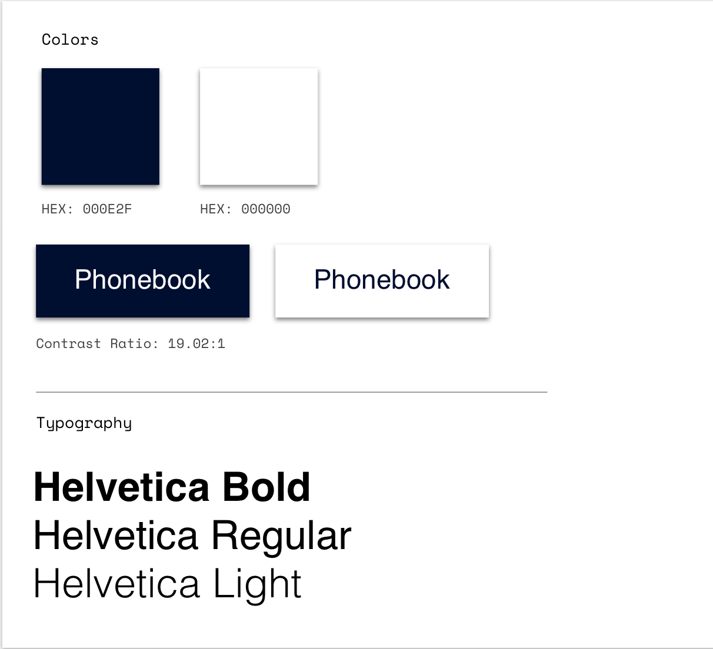
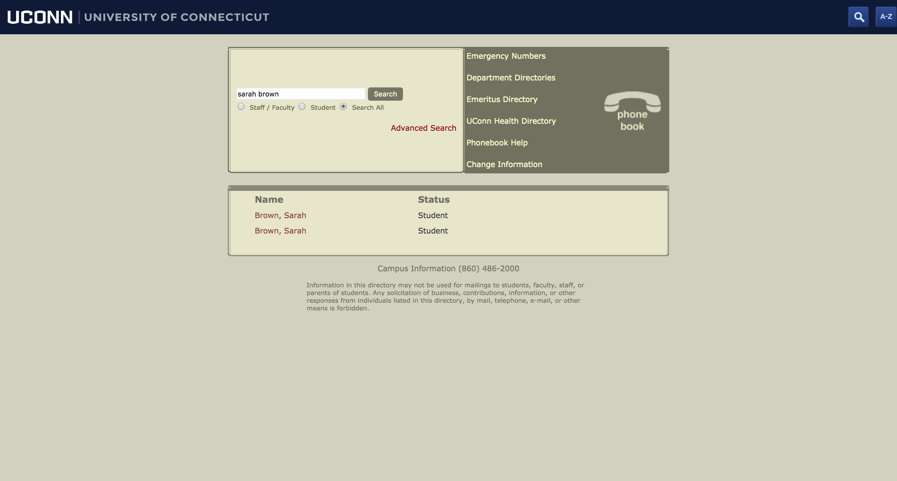
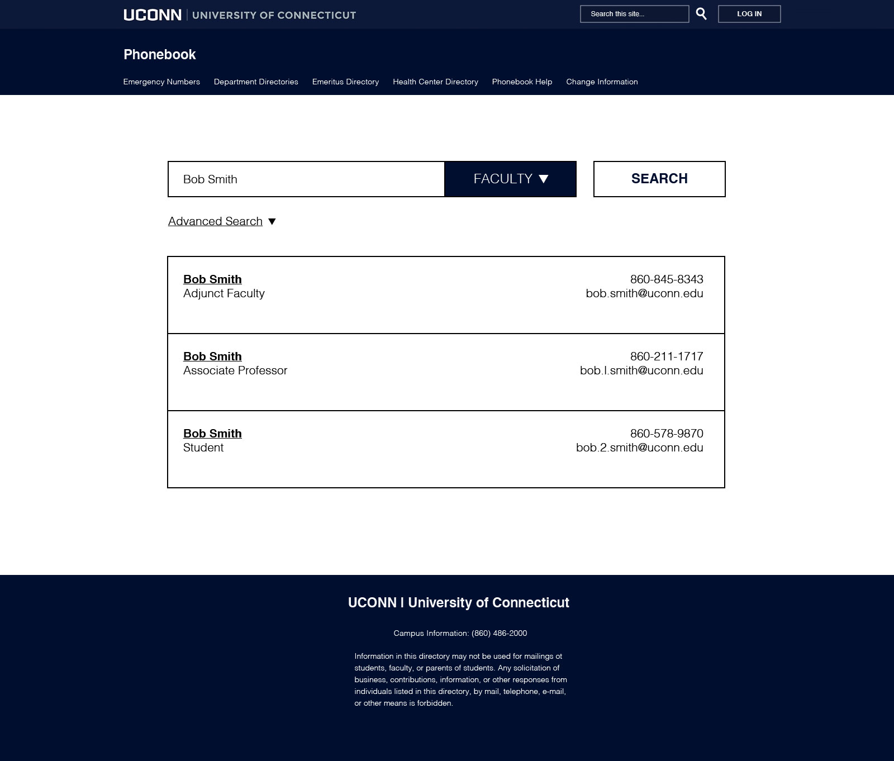
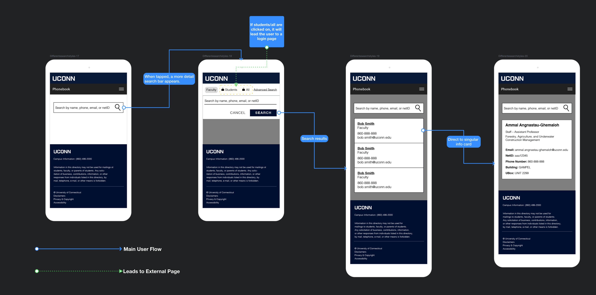

Problem:
The University of Connecticut’s phonebook is widely used by faculty, staff, and students. However, despite this, the site has not been updated in over ten years. This is an issue because this is the only University phonebook and it has confusing navigation and an outdated UI that doesn’t align with the current University’s brand standards. More importnatly, it does not not adapt to mobile. The web practices are long outdated and features for accesibility needs to be addressed.
Initial Planning
I wanted to map out user flows and scenarios that a user might go through when using the site. I jotted down some
possible choices that a user might make and came to realize that the user will most likely be using the search bar
the most. With this in mind, it was important to design a search bar that is easily accesbile and simple to use.
User Research:
I began my research by looking and studying other phone book sites, particularly other University ones to get a better sense on of where to start. I studied their interfaces, user flow, and information architecture. I wanted to see what aspects worked and what didn’t.
I then asked people about their concerns and opinions about the site and how it may or may not fulfill their needs.
After talking with a few people, I concluded that a lot of the concerns discussed among the team were also prevalent among students. Many of those interviewed were not design students, but they could still tell that this site’s design is outdated. In addition, the current navigation is flawed, as there are many broken and unneccesary links/pages and dead ends, making it difficult to conduct another search once you click on those links. It was mutually agreed upon that rather than leading the user to different pages, it is most efficient to have the search function stay the same throughout the user’s time on the site, which eliminates the confusing navigation.
To help summarize the answers received, I created three different user personas of current and potential users.
Personas

Goals and Objectives
Boiling down to the main problem, it is evident that:
- a. For a website that functions mainly as a search engine, the size of the search area is not proportionate to it’s aimed usage.
- b. The design for the site makes it hard for those with disabilities to see and access, as the font size is too smart, making it not only difficult to use in desktop, but even more difficult in mobile. In addition, the lack of contrast in the type and the background color makes it hard to read the content.
That being said, I came down to a few objectives to focus on and problems that can be addressed:
- Think about user navigation, finding the most efficient navigation make it accessible for everyone, using best web practices.
- Put more emphasis on the search bar — make it more accesible and have it be easy to use, as it is the site’s main purpose.
- Redesign the interface to fit University’s branding standards and to update outdated UI
Early Wireframes

Addressing Interface

The website colors are far removed from branding standards. More importantly, the colors dont’ provide a clear contrast, making it not accesible for certain people to read, especially with the small font-size. The goal was to design the site to give it more real estate, maximizing and
qefficiently making use of space.

Website UI
When choosing colors, I referred back to the notes I took on other phonebooks I researched. Universities tended to stick
with colors in their brand guidelines. This moves makes sense as you want to associate the phonebook with the University.
I decided to stick with two colors — the UConn blue and white, as they provide a very clear and crisp contrast and
passes web accesibllity requirements**.
As for the advanced search, rather than redirecting the user to the new page as the old site would do so, it would be best if we could remain on the same page to reduce confusion in navigation.
Addressing Search Issues

The University phonebook serves as a database for thousands of students, faculty, and staff. With so many people in a database, it is inevitable that some people might share the same or similar names. I tried to search a name and saw that there were two results. For someone who might want to save time or differentiate between the two, it is difficult to do so without repeatedly clicking and backtracking.

To help differentiante between the three, I figured we could display both their name, title, and contact info (telephone and email) so users won’t have to click on a name link just to realize it was the wrong one.
Website Flow


Conclusion
In this project, I gained insight of the different needs people might have depending on their background.
Overall, I learned that:
a. Learning about the user is important. It is important to reach out to different demographics to get an overall image of what users might need. What a young college student needs might be different than what an older person who is less knowledgeable about technology might need.
b. Prototyping was an extremely important part in the process. We tested different length emails, names, and taking out some information that might not be available to see what a card would look like — this helped create a universal design that would work with text of different lengths.
c. Visual design and creating design with updated UI elements will help tie the phonebook to the current University brand.
The website is still in production and development will take place within the upcoming year.
View interactive prototype here!